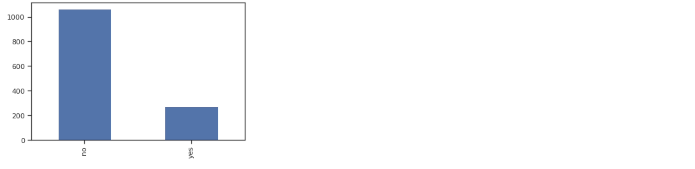

Predicting Insurance Premiums
Problem Statement
Predict Insurance premium for new customer
I have taken the smaple from large data set and use subset of features
- Our simple dataset contains a few attributes for each person such as
- Age, Sex, BMI, Children, Smoker, and their charges
Goal
- To use this info to predict charges for new customers
Data Collection
- Collect data from different sources
- Use Alchemy to connect data bases
- Merge data from different data sources
Data Reading
- Read the sample data using panas
- There are 6 columns one column is the target(Charges)
- age
- sex
- BMI children
- region
Exploratory Data analysis
- Minimum charge is quite low
- Maximum charge is quite heigh
- Mean of BMI is high
Corelation plot among features
Age Analysis
- There is peak in the graph and age is arround 20. So young people are more
- After age 20 the graph is is quite even across to the max age
BMI Analysis
- The distributation of BMI is look like normal
- Very few people has less emi
- some people hase also large BMI
- BMI average is 30
- Most of the people have BMI 30
Children Analysis
- Majority of people have 0 children
- The grpah looks like skewed which is obvious because Most of the people have 1 or 2 children
- Very few people has 5 children
Charge Analysis
- Most of the people has charges arround 10000
- Very few people has high charges more than 50000
Smoker Analysis
- Most of the people are no smoker
- Few people are smoker
- It might be posiible that smoker are paying high charges
- From the plot it seems that the people who are not smoking and less BMI paying less charges
- The people who are smoing and high BMI paying more charges
- It seems that Smoker will be good feature for ML model
Analysis of Male and female participation in charges

- It seems that Male and female has equal participation in charges
Pairplot analysis
- The people hase more age paying more charges
- The people has more BMI and smiker paying more
Preparing Data for Machine Learning Algorithms
- Convert categorical column into numerical column
- Standard scale transformation for charge column
Train Test split
- Divide data set into train test and validation set
- Validation data set is used to tune hyper parameter
- Test data set used for validate the model
Performance Metric
- Adjusted R square
Models That i have used
- Linear regression, tune hyper parameter. Use different regulaizer
- DecisionTreeRegressor, Tune hyper parameter for tree
- RandomForestRegressor, Tune hyper parameter for tree
- Support vector regressor, Tune hyper parameter
- Polynomial regression
Model Comparision
Best Model is RandomForest Regression
- © Untitled
- Design: HTML5 UP